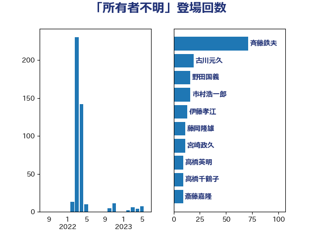

単語「所有者不明」

| 斉藤鉄夫 | 公明党 | 71 回 |
| 古川元久 | 国民民主党 | 19 回 |
| 野田国義 | 立憲民主党 | 16 回 |
| 市村浩一郎 | 日本維新の会 | 16 回 |
| 伊藤孝江 | 公明党 | 13 回 |
| 藤岡隆雄 | 立憲民主党 | 11 回 |
| 宮崎政久 | 自由民主党 | 11 回 |
| 高橋英明 | 日本維新の会 | 9 回 |
| 高橋千鶴子 | 日本共産党 | 9 回 |
| 斎藤嘉隆 | 立憲民主党 | 9 回 |
| 中根一幸 | 自由民主党 | 8 回 |
| 中山展宏 | 自由民主党 | 8 回 |
| 神津たけし | 立憲民主党 | 7 回 |
| 津島淳 | 自由民主党 | 7 回 |
| 城井崇 | 立憲民主党 | 7 回 |
| 柳本顕 | 自由民主党 | 6 回 |
| 中野洋昌 | 公明党 | 6 回 |
| たがや亮 | れいわ新選組 | 6 回 |
| 河西宏一 | 公明党 | 5 回 |
| 齋藤健 | 自由民主党 | 4 回 |
| 豊田俊郎 | 自由民主党 | 4 回 |
| 福島伸享 | 無所属 | 4 回 |
| 枝野幸男 | 立憲民主党 | 4 回 |
| 室井邦彦 | 日本維新の会 | 4 回 |
| 葉梨康弘 | 自由民主党 | 3 回 |
| 細田博之 | 自由民主党 | 3 回 |
| 田所嘉徳 | 自由民主党 | 3 回 |
| 浜口誠 | 国民民主党 | 3 回 |
| 宮崎雅夫 | 自由民主党 | 3 回 |
| 赤木正幸 | 日本維新の会 | 2 回 |
| 小宮山泰子 | 立憲民主党 | 2 回 |
| 古庄玄知 | 自由民主党 | 2 回 |
| 加田裕之 | 自由民主党 | 2 回 |
| こやり隆史 | 自由民主党 | 2 回 |
| 長谷川英晴 | 自由民主党 | 1 回 |
| 道下大樹 | 立憲民主党 | 1 回 |
| 進藤金日子 | 自由民主党 | 1 回 |
| 庄子賢一 | 公明党 | 1 回 |
| 山東昭子 | 自由民主党 | 1 回 |
| 山下貴司 | 自由民主党 | 1 回 |
| 大野敬太郎 | 自由民主党 | 1 回 |
| 大口善徳 | 公明党 | 1 回 |
| 住吉寛紀 | 日本維新の会 | 1 回 |